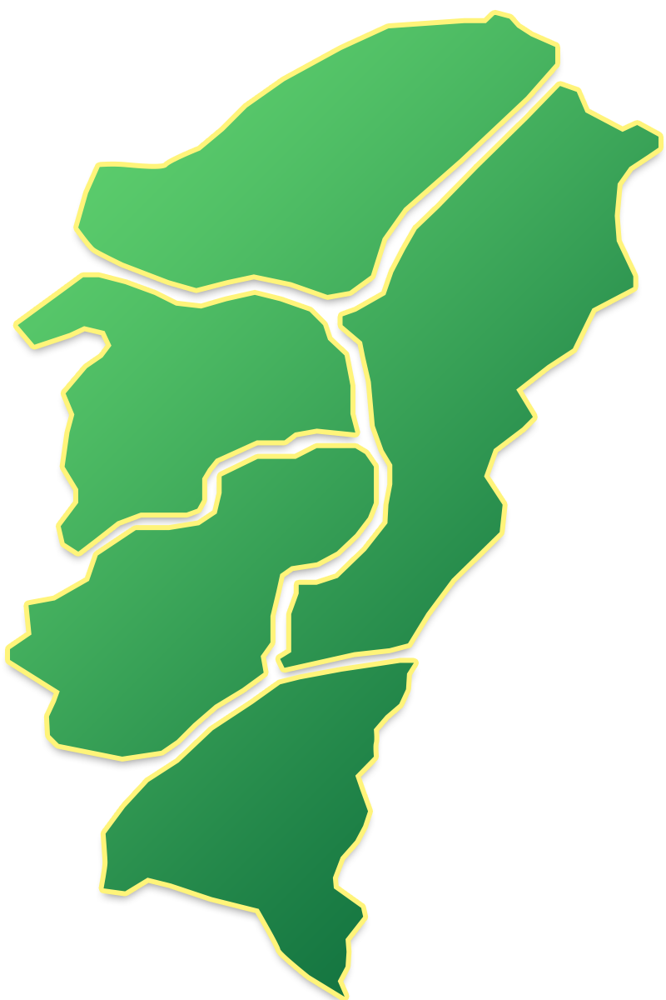
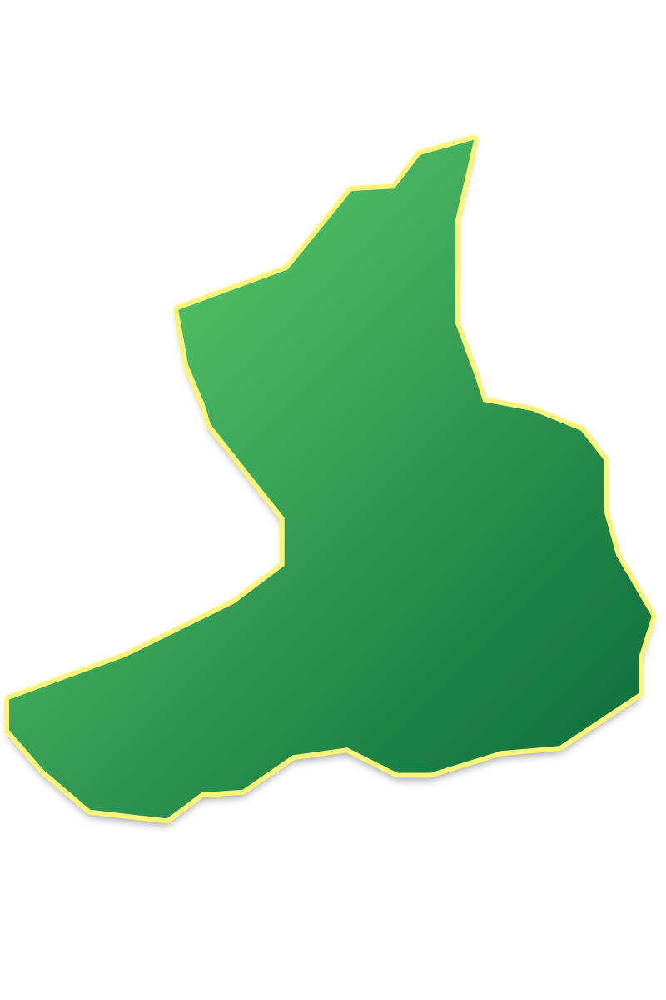
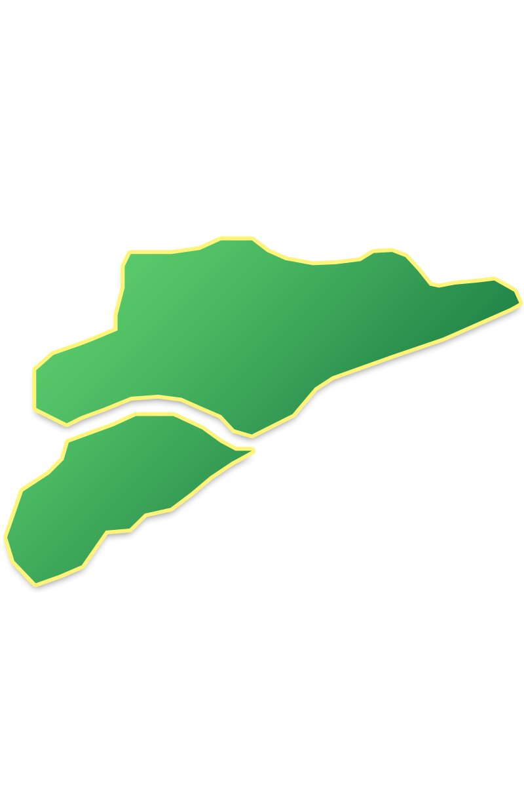
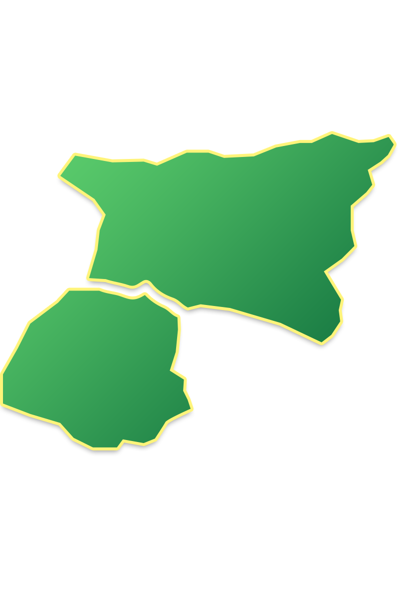

文化體驗3D導覽
- 發布單位:客發中心
- 發布日期:2020-03-20
- 更新日期:2020-03-20
- 點閱次數:123456
六堆
- 右堆

- 甲仙區
- 甲仙化石館
- 六龜區
- 十八羅漢山自然保護區
- 杉林區
- 葫蘆雕刻藝術館
- 美濃區
- 美濃客家文物館
- 高樹鄉
- 大路關「石獅公」
右堆介紹
屏東縣高樹鄉和屬高雄市之甲仙區、杉林區、美濃區、六龜區，為「右堆」
★高樹鄉★
本地原名「大車路」，因為道路寬闊，可同時容納多輛牛車行走。
地名由來有二說：
1.舊時莊頭有一株木棉樹，樹身高大，形狀就如一個大車蓋故取名為“高樹”。
2.漢人開墾初期，在地勢較高的河床上建立聚落，又因水量充沛長滿高大的“樹”林，故稱「高樹」。
（資料來源：花松村，民85，臺灣鄉土全志（九）。臺北：中一，頁95）
（資料來源：屏東縣政府編，民84，屏東縣國民小學鄉土教材）★美濃鎮★
地名由來有二說：
1.美濃舊稱為「彌濃」，為其地名之由來。
2.美濃過去是先住民曹族四社之一「美壟族」的分布之地。或有可能取自平埔族「彌力社」與溪名「荖濃溪」，各取一字並成地名。
清乾隆元年，有林豐山兄弟來此開墾，其開基碑文上有「瀰濃」等字樣。之後定莊名為「瀰濃」，意謂該地以水為源，汲用不完之意。甲午戰後，在臺日本人因懷念山明水秀的日本故鄉美濃，遂將「彌濃」改稱為「美濃」。
（資料來源：吳國華等，國民小學社會科鄉土教材之研究－認識高雄縣，臺灣省政府教育廳 發行，國立屏東師范學院 出版）★六龜鄉★
六龜舊稱為六龜里，六龜里源自曹族四社番芒仔芒番社名之譯音。大正九年改稱為六龜。因前後山巖相對，成為六個山巖，狀似龜形，故稱之。
（資料來源：吳國華等，國民小學社會科鄉土教材之研究－認識高雄縣，臺灣省政府教育廳發行，國立屏東師範學院出版）★甲仙鄉★
甲仙舊稱為甲仙埔，是阿里山四社番大武壠頭社人所建。此一帶先住民為傀儡番，甲仙埔似出自傀儡楠梓仙之埔地的縮讀，詳細地名由來有待查證。
（資料來源：吳國華等，國民小學社會科鄉土教材之研究－認識高雄縣，臺灣省政府教育廳發行，國立屏東師範學院出版）★杉林鄉★
杉林舊稱為山杉林，由來乃因為此地原始景觀為山杉蓊蔚成林之地而得名。
- 先鋒堆
- 中堆

中堆介紹
★竹田鄉★
地名由來有二說：
1.糶糴庄早先為六堆米穀集散地，當達達港河水暴漲時，將米穀先屯放在附近庄頭，因此將屯放貨物的地方稱為頓物。日治時期改為「竹田」，因為是竹園多於水田的鄉村，故改名為「竹田」。
2.本地原稱為『頓物』，乃因墾民將食糧、農具及其他物質安頓在此，故有此稱呼。民國九年時，改稱為竹田，係日式地名。
（資料來源：花松村，民85，臺灣鄉土全誌（九）。臺北：中一，頁31） - 前堆

- 長治鄉
- 國軍退除役官兵輔導委員會
彰化農場屏東分場 - 麟洛鄉
- 長治-麟洛自行車道
- 麟洛濕地公園
- 屏東運動公園
前堆介紹
★長治鄉★
本地屬西拉雅平埔族居住地之一，明清及光復時期漢人大批移入，邱永鎬來此拓墾，取名為「長興庄」。「長興」可能是當初拓墾時之墾號，光復後屏東市長何舉帆改長興鄉為長治鄉，取「長治久安」之意。
（資料來源：花松村，民85，臺灣鄉土全誌（九）。臺北：中一，頁279）★麟洛鄉★
早期屬西拉雅平埔族生活領域，可能當時有平埔「麟洛」社，清廷記為「凌洛」。清康熙年間嘉應州徐俊良先賢來此開墾，在開設水圳時發現大烏龜，地理師說：出現大龜的地方一定有麒麟，這裏是麟趾呈祥的好地方，就取地名為「麟落莊」，後來改稱為「麟洛」。
（資料來源：花松村，民85，臺灣鄉土全志（九）。臺北：中一，頁243）
（資料來源：屏東縣政府編，民84，屏東縣國民小學鄉土教材） - 後堆
- 左堆

左堆介紹
★新埤鄉★
地名由來有二說：
1.清代客家先人在此建立人工蓄水池「埤」以利耕種，在埤的前方建立新的聚落叫做「新埤頭」，日據時期去掉「頭」字簡稱「新埤」。
2.「新埤」取名自新築埤頭以灌溉的意思。
（資料來源：花松村，民85，臺灣鄉土全誌（九）。臺北：中一，頁127）
（資料來源：屏東縣政府編，民84，屏東縣國民小學鄉土教材）。★佳冬鄉★
地名由來有二說：
1.開拓之初周圍有很多茄苳樹，所以稱為「茄苳腳」。日據時期簡化地名時，由於閩南語「茄苳」與日語「佳冬」相近，故改名為「佳冬」。
2.佳冬原是馬卡道族茄藤社的舊址，因為茄藤與樹名「茄苳」近音，乃變為慣稱的地名「茄苳腳」。日人據台設置茄苳腳區，大正九年，才更名為「佳冬」。
（資料來源：花松村，民85，臺灣鄉土全誌（九）。臺北：中一，頁320）